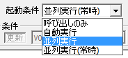

【コモンイベントの設定】
※コモンイベントとは … ゲーム中のどこからでも呼び出して使用できるイベントのことです。
コモンイベント設定は、メインウィンドウのこのアイコンボタンをクリックすることで開くことができます。
基本的な使い方は「イベントエディタ」と同じなのでそちらを参照してください。ここではコモンイベントエディタ特有の機能について説明します。
A．コモンイベント一覧
基本的にマップイベントウィンドウの①と同等ですが、コモンイベントでは複数コピーが出来ます。
B．イベントコマンド表示欄
マップイベントウィンドウの②と同等です。
また、ここに.commonファイルをドラッグ＆ドロップすることでファイル出力の読込と同じ動作をします
１．入力の数/結果を返す
「呼び出しのみ」の起動条件のコモンイベントでは、変数または文字列による「入力」を設定することができます。別イベントから呼び出される際に、許可した数だけ「入力」を受け付けられるようになります。入力された値は、変数の場合では入力1～4の値がそれぞれコモンセルフ変数0～3番に格納され、文字列の場合はコモンセルフ変数5～8に格納されて、コモンイベント開始時のコモンセルフ値として使用されます。（プログラム的にいえば「引数」の数と言い換えてもいいかもしれません）
入力の数および結果を返す設定は、★の「設定」ボタンから、設定します。詳細は下の方で説明します。
２．起動条件
コモンイベントの起動条件を指定します。起動条件には以下の4種類があります。
|  |
呼び出しのみ … 起動するのは別イベントから呼び出されたときのみ
自動実行 … 条件（後述）が満たされたときに実行される。実行中は他のイベントは起動しない。
並列実行 … 条件（後述）が満たされたときに実行される。実行中でも他のイベントが起動する。
並列実行（常時） … 条件に関わらず並列実行される、実行中でも他のイベントが起動する。
※並列処理イベントから「イベントの挿入」を行うと、挿入されたイベントは並列イベントとして動作します。 |
※並列実行のイベントは、条件が満たされなくなった段階で、たとえイベントの途中であっても処理が中断されてしまいます（ただし、処理高速化の副作用で、変数操作などの「絶対にウェイトが入らないコマンド」は続けて処理されてしまいます）。
また、イベントの途中でマップ移動した時も処理が中断され、条件を満たす場合は初めから再開されます。
３．条件
起動条件が「自動実行」「並列実行」の場合のみ、この欄に値を入力することができます。この欄で指定した条件が満たされたときだけイベントが実行されます。
４．メモ
コモンイベントを呼び出す際、このメモが表示されます。入力や処理のメモなどに使用してください。
５．ファイル出力
コモンイベントを.common形式のファイルとして出力したり、読み込んだりすることができます。
・単体保存 … 選択中のコモンイベントだけを保存します。
・複数保存 … 複数のコモンイベントをまとめて1つのファイルとして保存します。
・読込 … .common形式のファイルからコモンイベントを読み込みます、そこにあったイベントは上書きされてしまうので注意してください。
※Shiftを押しながら「単体保存」ボタンを押すと、テキスト形式で内容を出力できます。講座作成や質問の際などにお役立てください。
６．チェックポイント機能
イベント内にチェックポイントを設置する機能です。「◆チェックP追加」でチェックポイントを追加しておて「次チェックPへジャンプ」ボタンを押すと、次チェックポイントまですぐ飛ぶことができます。作成中の処理に入れておいたり、大規模イベントの処理ごとに入れて見やすくしたりするのに使えるでしょう。
また、特モードにチェックを入れると、普段使ってるのとは別のチェックポイントを設置・検索することができます。開発中の最新の場所にだけ入れるなどしてください。
７．「一つ元に戻す」ボタン
C、V、X、Delキーによる操作を、一つ元に戻します。これ以外の操作（イベントコマンドの挿入など）に関しては今のところ戻すことはできません。うっかり間違えて左記キーを押して大変なことになった場合に使ってください。最大１０回分まで巻き戻し可能です。
８．テストプレイ
テストプレイを開始するもので、メインウィンドウの 「テストプレイ」ボタンと機能は同じです。
「テストプレイ」ボタンと機能は同じです。
９．データ最大数の変更
コモンイベントの数を変更します。最大は10000です。
★.「設定」による特殊入力設定
画面上部の「設定」ボタンを押すと、以下のウィンドウが表示されます。ここで、入力の数とその内容、および、「結果」を指定します。
・入力する値の意味
ここに入力の名前を指定しておくと、「コモンイベント」のコモンイベントの呼び出し時に入力値の名前が表示され、より分かりやすくなります。
・特殊指定
数値入力の特殊指定方法を設定します。以下の三種類から選ぶことができます。
- 特殊な設定方法を使用しない
デフォルト状態ではこれが指定されています。直接数字を入力する方式です。
- データベース参照
指定したデータベースのIDを見ながら数値を選択できるようになります。
- 選択肢を手動作成
選択肢をあなたの手で作成します。
・結果を返す？
「結果を返す」にすると、コモン終了時、呼び出し元に、このコモンイベントの指定セルフ変数の値を返します。
★2.コマンドの検索
「検索」ボタンを押すと、以下のウィンドウが表示されます。
コモンイベント内から、検索したい文字列・数値を含む次のコマンドを検索することができます。
|
【検索語】
検索したい文字列を代入してください。
「【数値・変数】のみ検索」時には数値入力ボックスが表示されます。
Shiftを押しながら検索ボタンを押す（またはShift＋Enterを押す）と、
逆方向へ検索します。
【置換】
文字列や数値を置換する場合にチェックをオンにし、
置換後の文字列を代入してください。
【検索する対象】
・【コマンド文】から検索
コマンドリストに表示されているコマンド文を対象に検索します。
・コマンドに設定した【数値・変数】のみ検索
コマンドに設定された数値・変数を対象に検索します。
変数を検索したい場合は、変数呼び出し値を入力してください。
・コマンドに設定した【文字列】のみ検索
コマンドに設定された文字列を対象に検索します。
文字列ピクチャに設定した文章などは、コマンド文では
切れてしまいますが、この検索方法なら内部の
文字列全文を正しく検索することができます。
・【コモンイベント名】のみ検索
コモンイベントの名前だけを対象に検索します。
【検索する範囲】
・現在のイベント内のみ … 今開いているイベント内だけ検索します。
・全てのイベント … 見つからない場合、次々にイベントをまたいで検索します。 |
★3.セルフ変数使用状況
「セルフ変数使用状況」ボタンを押すと、以下のウィンドウが表示されます。
現在のコモンイベント中のコモンセルフ変数が、使用中かそうでないかを一覧できます。
また同時に、コモンセルフ変数名を設定することも出来ます。
ただし、チェックできるのは、1600000～1600099を直接変数呼び出し値で設定したもの及びドロップダウン リストより選択された物のみです。
文章中の\cself[？]やX番の変数呼出などは検知できず、またデータを呼ばない設定でも検知します。
また、全てコピー＆貼り付け機能により他のコモンから一気にコモンセルフ名をつけることが出来ます。
空欄だけ貼り付けを押した場合、現在コモンセルフ名が空欄の場所にだけコピー元の名前を貼り付けます。
未使用分だけリセットを押すと、使用されてないコモンセルフの名前を空欄にします。
【隠しコマンド】
コモンイベントの一覧を選択中、以下の入力で新規コモンイベントの挿入・抜き出しが可能です。
・CTRL+Shift+F6 ： 新規のコモンイベントを挿入する。
・CTRL+Shift+F7 ： 選択中のコモンイベントを抜き取る。
ただし、この機能を使うと、以降のコモンイベント番号が全てずれてしまいます。
使用することで、ゲーム全体の整合が取れなくなる可能性が極めて高い機能なので、使用にはくれぐれも注意して下さい。
もう一点、熟練者向けの隠しショートカットがあります。
・CTRL+R ： 1つ前に選択していたコモンイベントへ戻る。連続で押すと行ったり来たりする。
→ 他の部分からコピーしてくる場合などに、このショートカットが便利です。